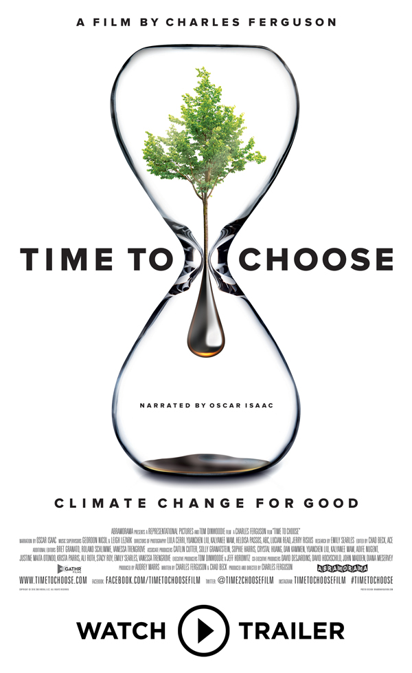
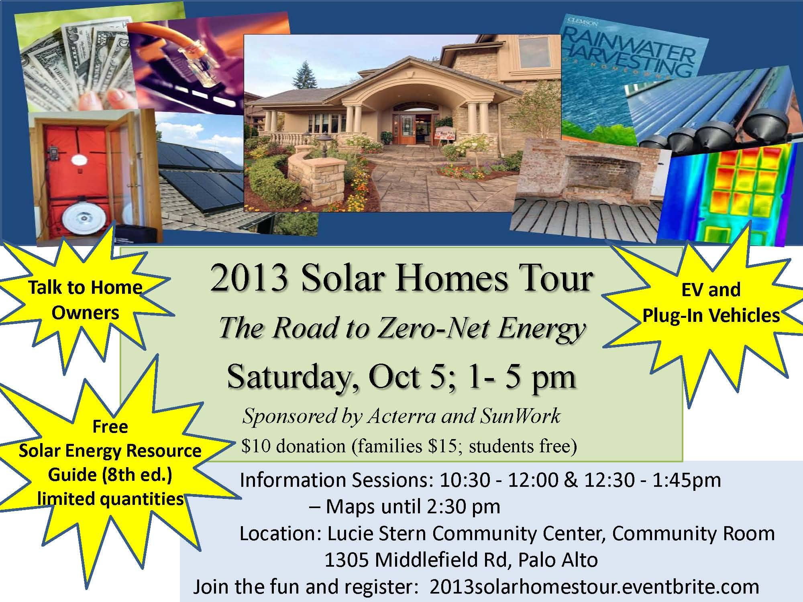
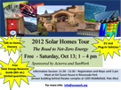

Upcoming Events
Thursday, March 8 Going Solar Workshop
at Santa Clara University from 7 pm to 8:15 pm
Learn about Silicon Valley Power's solar rebate that ends June 30
- Register here
Saturday, March 10 Arbor Day - Earth Day Celebration
in Mountain View, Pioneer Park, 11 am to 1pm
Friday, April 13 Santa Clara Earth Day Celebration
in Central Park Pavilion, 909 Kiely Blvd, 10 am to 2pm
Saturday, April 14 volunteer training
in San Mateo Libary 9 am to noon
- Register here
Saturday, April 14, Going Solar Workshop
in San Mateo Library 12:15 pm to 1:30 pm
- Register here
Saturday, April 21 Earth Day in San Luis Obispo
Past Events
Saturday, February 24, Going Solar Workshop
in Berkeley 12:45 pm to 1:45 pm
- Register here
Saturday, February 24 volunteer training
in Berkeley 2:15 pm to 5:15 pm
- Register here
Saturday, February 24 volunteer training
in Milpitas 9 am to noon
- Register here (Waitlist Only)
Saturday, February 24, Going Solar Workshop
in Milpitas 12:15 pm to 1:30 pm
- Register here
Saturday, February 24 volunteer training
in San Luis Obispo from 9:30 am to 12:30 pm
- Register here
Saturday, February 24 Going Solar Workshop
in San Luis Obispo from 12:45 pm to 2 pm
- Register here
Wednesday, January 10 Going Solar Workshop in San Luis Obispo
Saturday, January 13 volunteer training in Berkeley
Saturday, January 13 Going Solar Workshop in Berkeley
Saturday, December 16, Going Solar Workshop in Walnut Creek
Saturday, December 9, volunteer training in Cupertino
Saturday, December 9, Going Solar Workshop
Saturday, November 18, volunteer training in Redwood City
Saturday, November 18, Going Solar Workshop
Saturday, November 11,
volunteer training in Berkeley
Friday, November 3, Going Solar Workshop in Santa Maria
Saturday, November 4,
volunteer training in San Luis Obispo
Saturday, November 4, Going Solar Workshop in San Luis Obispo
Tuesday, October 17, Solar Workshop in San Mateo
- Sponsored by the City of San Mateo
Tuesday, October 3, SunShares event in Berkeley
Saturday, September 30, Solar Homes Tour - Albany/Berkeley
Saturday, September 23, volunteer training in Berkeley
Saturday, September 23,
volunteer training in Palo Alto
Saturday, September 23, Going Solar Workshop in Palo Alto
Saturday, Sept. 16, EV Rally in Cupertino
Friday, Sept. 8, Installation celebration in San Luis Obispo
Saturday, Sept. 9, Silicon Valley Fall Festival
Saturday, Sept. 9, San Mateo EV EXPO
Saturday, Sept. 2 volunteer training - San Luis Obispo
Saturday, Sept 2, Going Solar Workshop - San Luis Obispo
Saturday, August 20 GreenTown Los Altos Energy & EV Event
Saturday, August 12
volunteer training in Milpitas
Saturday, August 12, Going Solar Workshop
in Milpitas 12:15 pm to 1:15 pm
Saturday, Aug. 5 - Ribbon Cutting Event in Petaluma
for Committe on the Shelterless with Everybody Solar
Friday, July 28 - Ribbon Cutting Event in Oakland
for Harbor House with RE-volv, 1 pm to 2 pm
Saturday, July 22
volunteer training in Berkeley
Saturday & Sunday July 8 & 9, 10 am to 6 pm
Join SunWork at the Los Altos Art & Wine Festival
Saturday, June 24, Solar Simplified Part II:
The Deeper Dive in Berkeley
Saturday, June 24
volunteer training in San Jose
Saturday, June 10, Solar Simplified in Berkeley
Saturday, June 3, volunteer training in Berkeley
Saturday, May 20, volunteer training in Palo Alto
Sunday, May 7, Albany Arts & Green Festival
Monday, May 1, Home Energy Workshop in Richmond
Saturday, April 29, Belmont Earth Day Celebration
Saturday, April 29, Sunnyvale Fit and Fun Fair
Saturday, April 29
volunteer training in San Leandro
Sunday, April 23
volunteer training in San Francisco with partner RE-volv
Saturday, April 22, Fremont Earth Day Fair
Saturday, April 22, Cupertino Earth Day Celebration
Saturday, April 15
volunteer training in Cupertino
Thursday, April
6
Sustainable San Mateo County Awards Event
Saturday,
March 18 volunteer training in Milpitas
Saturday,
March 11 volunteer training in Berkeley
Wednesday, February 22, Solar Simplified Workshop in Albany
Saturday, Jan 14 training in Redwood City
Saturday, Dec 10 volunteer training in San Jose
Saturday, Dec 17 volunteer training in Berkeley
Tuesday, Nov. 15
"PV and Real Esate: how solar affects
home appraisals, sales, and financing"
Sponsored by NorCal Solar Energy Association
Sunday, Nov. 20 volunteer training in Santa Cruz
Saturday, Nov. 5 volunteer training in Berkeley
Thursday, Oct. 27 volunteer training in Petaluma
Thursday, October 20 from 7 to 9 pm in El Cerrito
SunWork's Doug McKenzie presents Solar Simplified
Saturday, Oct. 22 volunteer training in Milpitas
Wednesday, Oct. 5 from 5 pm - 7 pm in Berkeley
SunWork at Solar Workshop and Panel
Saturday, Oct 15 from 10 to noon in Palo Alto
SunWork at Electric Automobile Assoc. of Silicon Valley meeting
Sunday, September 25 volunteer training in Sunnyvale
Saturday, Sept. 17 from 10 am - 4 pm in Cupertino
SunWork at 44th Annual EV Rally
Sunday, Sept. 18 from 1pm - 4 pm in Palo Alto
SunWork at Acterra's Drive Electric Celebration
Saturday, Sept. 10 Silicon Valley Fall Festival in Cupertino
Sunday, Sept. 11 Solano Avenue Stroll in Berkeley
Saturday, Sept. 3 volunteer training in Berkeley
Sunday, August 21 volunteer training in San Jose and Fremont
Sunday, August 14, SunWork at Energy Day in Los Altos
Saturday, August 13, SunWork at EHP BlockFest in East Palo Alto
Saturday, July 16 volunteer training in Redwood City & Berkeley
Tuesday, July 12 from 9 am in San Francisco
- SunWork panel at Intersolar - Solar for All
Wednesday, June 15 in Cupertino at 7:30 pm
Join SunWork for screening of climate change film
"Time to Choose" by Oscar Winning Director
Saturday, June 18, volunteer training in Milpitas & Cupertino
Saturday, May 21 volunteer training in Redwood City & Berkeley
Thursday, May 12 at De Anza College in Cupertino
SunWork hosts a free screening of the film "Catching the Sun"
Thursday, April 21 from 10am to 3pm
Join SunWork for EcoFest at Laney College
Saturday, April 30 from 11:00 am to 3:00 pm
Join SunWork for the Cupertino Earth Day Festival
Saturday, April 30 from 11:00 am to 3:00 pm
Sunnyvale Fit and Fun Fair, Columbia Neighborhood Center
Saturday, April 16 from 11 am to 4 pm
Join SunWork for Berkeley's Bay Festival at the Marina
Wednesday, April
12 & 13 in Emeryville & Berkeley
Join SunWork for the film "Catching the Sun" with Q&A after screening
Saturday, March
19 Volunteer Training in Milpitas and Cupertino
Saturday, February 13 Volunteer Training in Redwood City and Berkeley
Saturday, November 21 from 10:30
to 3pm in Oakland
Climate Mobilization and Rally
Thursday,
December 10 from 7pm to 9pm in El Cerrito
Solar Workshop & Panel: It's Your
Power - Solar Simplified
- Saturday, November 14 in Redwood City and Berkeley
- Sunday, November 15 at Stanford and in Fremont
Saturday, November 14 Climate Rally in Mountain View
SunWork Volunteer Training
Saturday, October 3 in Palo Alto and Redwood City
Sunday, October in Berkeley and Fremont
Menlo Park Community Open House - SunWork will be there
Thursday, September 24 from 6 pm to 8pm
SunWork Volunteer Training
Saturday, August 8 in Fremont and Milpitas
Sunday, August 9 from 9 am to noon & 1 to 4pm in Palo Alto
Saturday, August 15 from 11am to 12:30pm
Ribbon Cutting event and celebration along with Everybody Solar.
Includes a presentation from Wildlife Associates & their "wild teachers".
Saturday, April 25 from 10:00 am to 3:00 pm
Join SunWork for Sunnyvale's Fit & Fun Earth Day Fair
SunWork Volunteer Training
Saturday, April 18 and 19
Saturday, April 11 from 11:00 am to 3:00 pm
Join SunWork for the Cupertino Earth Day & Arbor Day Festival at the Civic Center Plaza.
SunWork Volunteer Training
Saturday, Feb. 14 and 15
Wednesday, Feb. 11 6:30 pm to 8:30 pm
Doug McKenzie, SunWork & NorCal Solar Board Member speaks at
IEEE Silicon Valley PV meeting
Topic: Expressing Solar
Saturday, September 13 from 10 am to 5 pm
Join SunWork at the Cupertino Fall Festival in Memorial Park
Wednesday, September 17 from 9pm to midnight
Go Wild - For Wildlife Associates - Solar Fundraiser, Sponsored by Everybody Solar
ELIXIR, 3200 16th Street, San Francisco
Sunday,
September 21 from 1 pm to 4pm
Northern California People's Climate Rally
Lake Merritt Park, Oakland
SunWork volunteer orientation and training sessions
Location: Peninsula Conservation Center (PCC), Palo Alto
Thursday, August 14 from 4 pm to 8 pm
SunWork will join GreenTown Los Altos at the Los Altos Farmer's Market.
For more info click here.
Sunday, July 6 from noon to 6 pm
Join SunWork at the Temescal Street Fair in Oakland.
Free event
Thursday, June 12 from 7 pm to 8 pm
Mike Balma, Board Member, will speak on solar for home owners.
Also hear about Electric Vehicles from a speaker from ChargePoint starting at 6pm.
10350 Torre Ave, Cupertino in the Community Hall
Free event and no reservation is required.
SunWork display at the San Mateo County Fair
Noon to 10 pm most days in the Sustainable Living Section
Fair Tickets $10 plus parking
Saturday, May 17 from 9:30 to noon
Free Solar 101 Workshop - sponsored by City of Palo Alto Utility
Instructor - Doug McKenzie, SunWork and NorCal Solar Board Member
Lucie Stern Community Center, Palo Alto
Saturday, April 26 and Sunday, April 27 from 9 am to noon
SunWork volunteer orientation and training sessions in Palo Alto
Sunday, April 13 from 12 pm to 3:00 pm
Join SunWork for an EarthDay Celebration with Whole Foods Market - Los Altos
Saturday, April 5 from 11:00 am to 3:00 pm
Join SunWork for the Cupertino Earth Day & Arbor Day Festival at the Civic Center Plaza.
Saturday, March 1, 11:30 am to 1:00 pm
Join SunWork and RE-volv for a solar celebration of a 22 kW system at Kehilla Community Synagogue. Check out a time-lapse video of the installation here.
Thursday, October 10, 2013 7:00pm to 9:00pm
How to Go Green without Going Broke
Kona Kai Swim and Racquet Club, 680 Hubbard Avenue, Santa Clara
Saturday, October 12, 2013 7:00 to 8:00 pm
San
Carlos & Belmont Sierra Club Meeting - Small Solar Made
Affordable - SunWork Presenting
San Carlos (Check web
site for details.)
Saturday, October 5, 2013 10:00 am to 5:00 pm
Solar
Homes Tour - The Road to Zero-Net Energy
Community Room, Lucie Stern Center, 1305 Middlefield Road, Palo Alto
|  October 5 Presentation |
Flyer |
Sunday, August 11, 2013 10am to 4pm
Green Day on the Green
State Street & Edith, Los Altos
Wednesday, June 26, 2013 7:00 pm to 9:00 pm
How to Go Green without
Going Broke
Community Room, 1275 North Milpitas Boulevard, Milpitas, CA.
Thursday, April 18, 2013 7:00 pm to 10:00 pm
Solar Rockstars For A
Cause
111 Minna in San Francisco.
Monday, April 15, 2013 6:30 pm to 8:30 pm
Earth Day Celebration
& Talk on Climate Change
Redwood City Main Library, 1044 Middlefield Road
Saturday, April 13, 2013 1:00 pm to 7:00 pm
Reuben Veek, SunWork Founder, will speak at UC San Diego's Go M.A.D.
(Make a Difference) Conference.
Price Center Ballroom East, 9500 Gilman Drive in LaJolla, CA
Saturday, April 6, 2013 11:00 am to 3:00 pm
Join SunWork at the Cupertino Earth Day
& Arbor Day Festival at the Civic Center Plaza.
Monday, March 25, 2013 6:30 pm to 8:30 pm
How to Go Green without
Going Broke
Redwood City Main Library, 1044 Middlefield Road
Friday, March 15, 2013 9:30 am to 12:30 pm
Mike Balma, SunWork Board Member, spoke at the HERO Clean Energy Showcase.
Canada College, Building 3, Room 148, 4200 Farm Hill Boulevard, Redwood City
Monday, March 11, 2013 at 6:00 pm
Mike Balma, SunWork Board Member, was interviewed on SVTAGS, a local cable TV show on sustainability. The show was on Channel 15 (Comcast) San Jose and Campbell at 6:00PM or watch online on http://www.creatvsj.org/
- 6:00 PM on KCAT the Los Gatos TV Station
- 6:00 PM on Channel 26, Santa Cruz County
- 6:00 PM on Channel 72 in Watsonville/South County Santa Cruz
Wednesday, March 6, 2013 7:00 pm to 9:00 pm
How to Go Green without
Going Broke in Pacifica.
Saturday October 13, 2012 11:00 am to 5:00 pm
2012 Solar Homes Tour
